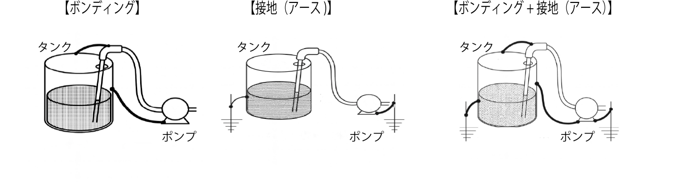

貯蔵・取扱いの方法
第4類危険物を取り扱う際は、火災・高温体・火花との接近や接触を避けることが基本です。
さらに、万が一の火災に備え、粉末消火器など、 該当する危険物に適合した消火器を設置しておく必要があります。
換気を十分に行い、発生する蒸気の濃度が燃焼下限界の1/4以下となるよう管理します。
危険物は密栓した容器に入れ、風通しのよい冷暗所で保管します。 また、気温の上昇などにより液体が膨張すると、容器が破損したり、栓から液体が漏れ出すおそれがあるため、 容器の上部には膨張を考慮した余裕空間を確保しておくことが重要です。
屋内で危険物の取扱作業を行う場合は、必ず通風や換気が十分に確保された場所で作業を行います。
また、使用済みの空容器には、可燃性蒸気が残留している可能性があるため、 ふたをしっかりと閉めたうえで、通風・換気の良い屋内の床面に保管します。
万一、事故などにより危険物が流出した場合には、土のうなどで周囲を囲み、河川などへ流出しないように対処します。
さらに、作業者は帯電防止機能のある作業服や靴を着用することが望ましく、絶縁性の高い素材のものは使用しないよう注意が必要です。
作業時には綿素材の衣類を着用することが推奨されます。 これは、綿が静電気を帯びにくい素材であるためです。
一方で、合成繊維は種類によってプラスまたはマイナスに帯電しやすい性質を持つため、 火災の原因となるおそれがあります。
危険物が少量漏えいした場合は、布などで拭き取るなどの簡易な方法で処理します。
ただし、大量に漏えいした場合には、 漏えいした量や場所（海上・陸上）の状況を踏まえ、 油回収装置・油吸着剤などの回収手段と、 油ゲル化剤・油処理剤などの処理剤を適切に使い分けて対応する必要があります。
ガソリンの貯蔵及び取扱い
ガソリンの貯蔵及び取扱いは、以下を注意しましょう。
- ガソリンは消防法に適合した金属製の容器で取り扱い、必ず密栓して保管します。
- 火気や高温部から離れた場所で、直射日光の当たらない通気性のよい地面に保管します。
-
ガソリンは漏れやあふれによって火災が発生しやすいため、取り扱い時には細心の注意を払います。
開口前には必ずエア抜き（エア調整ねじや圧力調整弁の操作）を行った上で開栓します。 - 夏季は温度の上昇により蒸気圧が高くなりやすいため、吹きこぼしが起こらないよう慎重に取り扱います。
- ガソリンを容器いっぱいまで入れないこと。必ず内部に空間（余裕）を残して保管します。
ひっかけ注意！
- ガソリンを「ポリタンクやペールかん」で保管 → ×。法令上は、消防法に適合した金属製容器で密栓して保管する。
- 容器には「できるだけいっぱい入れる」 → ×。蒸気圧の上昇を考えて必ず空間（余裕）を残すのがポイント。
- 保管場所は「屋内の棚の上」や「車内」 → ×。火気・高温から離れた、直射日光の当たらない通気のよい地面が正解。
火災予防
危険物を取り扱う際は、むやみに蒸気を発生させないことが重要です。 可燃性蒸気は空気と混ざることで爆発的に燃焼する危険性があります。
特に、酸化性物質と一緒に同じ室内に保管してはいけません。 発火や爆発のリスクが高まるため、保管場所を明確に分ける必要があります。
また、詰め替え作業などで蒸気が発生する場合には、 必ず十分な通風と換気を確保してください。 蒸気の比重は空気よりも重いため、発生した蒸気は床面や低所に滞留しやすくなります。 このような滞留蒸気は、換気装置を使って屋外の高い位置へ排出するようにします。
たとえば、電源スイッチをON/OFFする際には電気火花が発生することがあります。 この火花が可燃性蒸気に引火する危険があるため、可燃性蒸気が滞留するおそれのある場所で使用する電気設備は、必ず防爆構造としなければなりません。
防爆構造とは、電気火花や高温部分によって可燃性蒸気などが爆発するのを防ぐ構造のことです。 各種の防爆構造は、関連規格に基づいて定められており、使用環境に応じて適切に選定する必要があります。
詳しくは、「第2章:4節 引火と発火」を参照してください。
出る出るポイント！
- 可燃性蒸気をむやみに発生させない（不要な加熱・開放を避ける）。
- 酸化性物質とは同じ室内で保管しない（発火・爆発リスクが高い）。
- 詰め替え作業では必ず十分な換気を行う。蒸気は空気より重く、床面や低所に滞留しやすい。
- 換気装置を使い、蒸気は屋外の高い位置へ安全に排気する。
- 電気スイッチなどの電気火花が可燃性蒸気に引火するおそれがあるため、電気設備は防爆構造とする。
静電気による火災の予防
危険物の注入や移送を行う際には、接地導線付きのホースを使用します。 また、タンク、容器、配管、ノズルなどは、 可能な限り導電性の高い材料で構成されたものを使用し、 これらの導体部分は必ず接地しておきます。
危険物を流動させたり、揺動させたりすると、
静電気が蓄積しやすくなります。
そのため、ホースなどを使って液体を移し替える際には、
流速を遅くして静電気の発生を抑えるようにします。
また、ホース・配管・タンク・タンクローリーなどは確実に接地し、 静電気を逃して帯電を防止します。 流動や揺動のあとには、一定の静置時間を設けてから次の作業を行います。
静電気が発生するおそれのある作業を行う際には、床面に散水して周囲の湿度を高め、 静電気の蓄積を防ぎます。さらに、タンク内の可燃性蒸気を不活性ガスに置換するなどの安全対策も有効です。
作業者は帯電防止処理が施された作業服や履物を着用するようにします。
出る出るポイント！
- 危険物の移送ホースは、接地導線付きホース＋導電性の高い材料が原則。
- 液を移すときは、流速を遅く・揺すらないようにして静電気の発生を抑える。
- タンク・ホース・タンクローリーなどは確実に接地して帯電を防止してから作業を始める。
ひっかけ注意！
- 作業服は綿素材＋帯電防止処理が◎。
- 試験では「合成繊維の作業服」「絶縁性の高い素材」を選ばせようとする肢が多いが、 どちらも静電気がたまりやすく NG になる。
貯蔵タンクの清掃
貯蔵タンクの清掃を行う際には、 いくつかの重要な安全対策を講じる必要があります。
まず、洗浄用の水蒸気は低速で噴出させ、 静電気の発生を抑制します。 さらに、タンク本体は確実に接地（ボンディングを含む）し、静電気の蓄積を防止します。
また、タンク内に残留する可燃性蒸気は、 窒素などの不活性ガスで置換しておくことが必要です。 作業にあたる者は、帯電防止処理が施された作業服や靴を着用し、 安全に作業を進めるようにします。
出る出るポイント！
- 洗浄用の水蒸気は低速で噴出させ、静電気の発生を抑える。
- タンク本体はボンディングを含めて確実に接地し、静電気の蓄積を防ぐ。
- タンク内の残留可燃性蒸気は窒素などの不活性ガスで置換してから作業する。
- 作業者は帯電防止処理された作業服・靴を着用して清掃を行う。
ボンディングと接地（アース）
ボンディングとは、複数の機器や構成物がそれぞれに帯電するのを防ぐため、 それらを金属線など電気抵抗の小さい導体で直接接続し、電位差をなくす方法です。 これにより、放電や火花の発生を防止します。
一方、接地（アース）とは、貯蔵タンク、注入ノズル、 ホースなどの設備を地面（大地）に電気的に接続し、 発生した静電気を地中へ逃すための措置です。 こちらも、金属線などの電気抵抗の小さい導体を用いて確実に接続します。

出る出るポイント！
- ボンディング：複数の容器・配管などを金属線などの小さい電気抵抗の導体で直接接続し、電位差をなくす方法。
- 接地（アース）：タンク・ノズル・ホースなどを大地に電気的に接続し、静電気を地中へ逃がす方法。
- どちらも、電気抵抗の小さい導体（銅線など）を使うのがポイント。
ひっかけ注意！
- 「ボンディング＝大地に接続」「接地＝機器どうしを接続」など、ボンディングと接地を入れ替えた肢が頻出。
- ボンディング：機器どうしをつなぐ。
- 接地：機器から大地へつなぐ。
- ——このセットで覚えておけば、逆さまの肢は一撃で切れる。
クイズ
次は第3章6節：特殊引火物の性状に進みます。第3章5節の事故事例と対策については練習問題のみ提供しています。